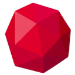
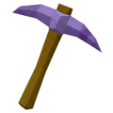
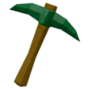
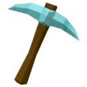
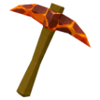
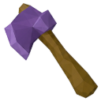
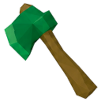
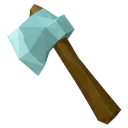
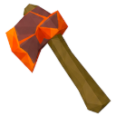

Uncut Ruby
Resource
| Property | Value |
|---|---|
| Value | 448 coins |
| Sells for | 56 coins each |
| High Alchemy | 78 coins |
| Market price | 1,200 coins (a guide for trading; shops and High Alchemy pay far less) |
| Stacks | Yes |
Gathered from
| Activity | Level | Zone | Amount | Chance |
|---|---|---|---|---|
| ⛏️ Mine Gem Rocks | ⛏️ Mining 40 | 🕳️ Deepstone Mines | 1 | Rare (1 in 149) |
Used to temper

Amethyst Pickaxe: 10 a try to reach +4
Viridian Pickaxe: 20 a try to reach +4
Crystal Pickaxe: 40 a try to reach +4
Ember Pickaxe: 80 a try to reach +4
Amethyst Axe: 10 a try to reach +4
Viridian Axe: 20 a try to reach +4
Crystal Axe: 40 a try to reach +4
Ember Axe: 80 a try to reach +4